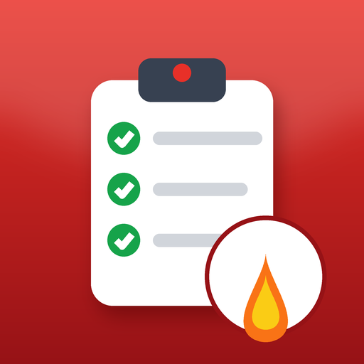

Prácticas
Formularios de prácticas desde el móvil
Abrir la appPonerla en la pantalla de inicio
- iPhone: en Safari, pulsa Compartir y luego «Añadir a pantalla de inicio».
- Android: en Chrome, abre el menú ⋮ y pulsa «Añadir a pantalla de inicio» (o «Instalar app»).
La primera vez
- Te pedirá tu código personal. Pídeselo a Valentín.